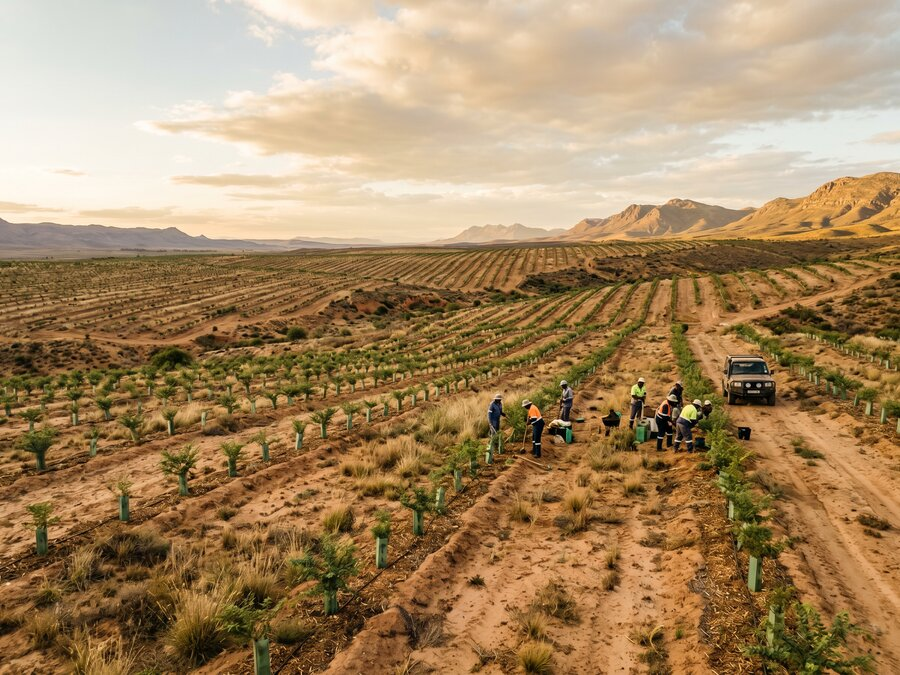

Our Expertise
Afforestation
World's Current State
Reclaiming the World's Drylands
Desertification is one of the most severe and underreported environmental crises of our time. Across Africa, Central Asia, and Latin America, millions of hectares of once-productive land are being lost each year to advancing deserts, degraded soils, and collapsing vegetation cover.
Unlike reforestation — which restores previously forested land — afforestation establishes forests and green corridors in areas that have never been forested, or have been barren for so long that natural regeneration is no longer possible without intervention.
GEP's afforestation programmes are engineered from first principles: selecting species suited to harsh dryland conditions, engineering soil preparation and water-harvesting systems, and establishing phased planting sequences that build ecological complexity over time.

Our Approach
Engineering Green Belts That Last
Stage 01
Soil Preparation
Degraded dryland soils require active remediation before planting. We engineer water-harvesting structures, introduce organic matter, and select pioneer species that fix nitrogen and rebuild soil biology.
Stage 02
Phased Planting
Afforestation is not a single planting event. We design multi-year, multi-species planting sequences that progressively build canopy complexity, shade tolerance, and ecological function.
Stage 03
Community Integration
Every afforestation programme embeds local employment, skills training, and long-term stewardship roles — ensuring communities have an economic stake in the success of the landscape.
Interested in an afforestation programme?
We work with governments and institutional partners on dryland restoration programmes from 10,000 hectares upward.